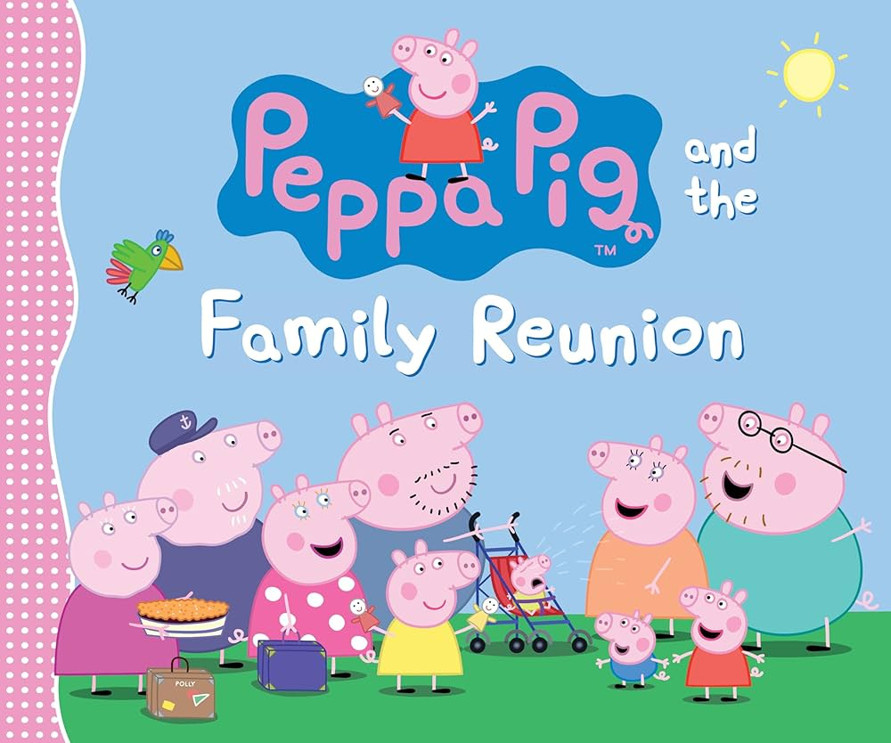

Characters
Main characters of peppa pig
peppa pig- A bubbly little pig. She like jumping in muddy puddles.
George- Peppa's younger brother. His favourite toy is dinosaur.
Mummy pig
daddy pig
Grandma pig
Grandpa pig
Suzy sheep-Peppa's best friend.
Madame Gazelle- Peppa's teacher.
List of peppa pig characters